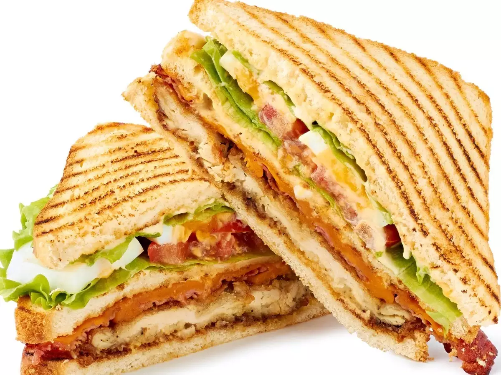

MEAL PLANNER
| MEAL PLAN |
| Days | Breakfast | Lunch |
Dinner |
| Monday | | - Spanish Sardines
|
 | - Sinigang
|
| - Salmon
|
| Tuesday |
| hotdog |
 | Barbecue |
| Tilapia |
| Wednesday |
 | Porkchop |
 | Sandwich |
| Cococrunch |
| Thursday |
 | Bulalo |
 | Steak |
 | Bangus |
| Friday |
| Sausage |
| Chicken Fillet |
| Pampano |
references
Lott, B. (2020). Homemade Spanish sardines. Amiable Foods. https://amiablefoods.com/homemade-spanish-sardines/
Manalo, L. (2021). Sinigang na Baboy. Kawaling Pinoy. https://www.kawalingpinoy.com/sinigang-na-baboy
Yum, M. |. W. (2023). Pan seared salmon. Wholesome Yum | Easy Healthy Recipes. 10 Ingredients or Less. https://www.wholesomeyum.com/pan-seared-salmon/
Lauren. (2021). Air fried hot dogs. Low Carb Nomad. https://www.lowcarbnomad.com/air-fried-hot-dogs/
Manalo, L. (2023). Filipino Pork Barbecue. Kawaling Pinoy. https://www.kawalingpinoy.com/filipino-pork-barbecue/
>Merano, V. (2019). Fried Tilapia recipe. Panlasang Pinoy. https://panlasangpinoy.com/filipino-food-fried-fish-tilapia-dish/
Perfect grilled pork chops recipe. (2023, September 14). Serious Eats. https://www.seriouseats.com/the-best-juicy-grilled-pork-chops-recipe
Times Food. (2021, June 22). Club sandwich recipe: How to make club sandwich recipe | Homemade club sandwich recipe. https://recipes.timesofindia.com/recipes/club-sandwich/rs83740315.cms
Times Food. (2020, May 11). Bacon and eggs recipe: How to make bacon and eggs recipe | Homemade bacon and eggs recipe. https://recipes.timesofindia.com/recipes/bacon-and-eggs/rs75680608.cms
Before you continue. (n.d.). https://www.google.com/search?q=bulalo&sca_esv=571184275&tbm=isch&source=lnms&sa=X&ved=2ahUKEwjfvOqXzuCBAxXQxjgGHdH7C-cQ_AUoAXoECAMQAw&biw=766&bih=789&dpr=2&safe=active&ssui=on#imgrc=IsAwmOEJf2eNNM
Beef Steak with Peppercorn Gravy - Recipe. (2021, September 23). Unilever Food Solutions. https://www.unileverfoodsolutions.com.ph/recipe/beef-steak-with-peppercorn-gravy-R9007725.html
Beef Steak with Peppercorn Gravy - Recipe. (2021, September 23). Unilever Food Solutions. https://www.unileverfoodsolutions.com.ph/recipe/beef-steak-with-peppercorn-gravy-R9007725.html
Chef, P. S. (2021). How to: Smoked Venison Sausage - Deer Sausage recipe. PS Seasoning. https://www.psseasoning.com/blogs/recipes/smoked-venison-sausage
Izzy. (2021). Crispy oven baked chicken fillet (Lemon garlic parmesan). IzzyCooking. https://izzycooking.com/chicken-fillet/
Odeh, S. a. D. (2023). Steamed Pompano with Soy Sauce Recipe. The Odehlicious. https://theodehlicious.com/steamed-pompano-recipe/
SORRY PO I REALLT DON'T KNOW WHY MY BACKROUND COLOR ISN'T WORKING